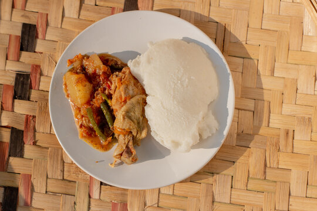

Sadza Recipe

How To Cook Sadza
When you want to cook sadza you have to put all your ingredients in order.
The ingredients that you need to cook sadza are: water and mealie-meal.
Ingredients
Steps
- Put 750 ml of water in a medium sized pot.
- Bring water to the boil.
- Put a small amount of mealie-meal into the pot and stir continuously until i thickens.
- Let the porridge splutter for a few minutes and then add the remaining mealie-meal a bit a t a time, mixing well after each addition.
- When it thickens enough, let it simmer for 3 minutes and then serve with relish of your choice.